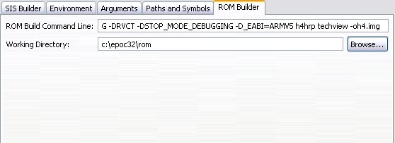

Use the ROM Builder pane to specify commands and a working directory for building a GUI ROM Image. The tool used to build GUI ROM images is called buildrom and can typically be found in your SDK path, for example in the \Symbian\9.1\S60_3rd\Epoc32\tools directory. The tool used to build text shell images is called ROM. The ROM image generated from the ROM building process specifies a base address for the image to run at. This might be an address in RAM or ROM. The image must be downloaded to the device at this address.
Building a ROM requires that the following are available, or have been successfully created:
Rom build assembles executable and data files into a ROM image.
Executables are pre-processed, relocated, and have their imports and exports bound for a ROM image based at some given virtual address. The files, base address of the ROM, and various other parameters are specified by means of the obey file. This is a file of type .oby and is a text file containing statements that specify how the ROM image is to be built. A .oby file can include other files in the same way that files containing C++ source can #include other C++ files. By convention, the included files have the .iby file type. This structure allows flexibility in the way that ROM images are defined.
NOTE The ROM image will be rebuilt for any target whenever a change to the project occurs; except for WINSCW targets.

Figure 1. ROM Builder pane
| Name | Function |
|---|---|
| ROM Build Command Line | Enter commands to build the GUI ROM Image. For example, the following sample command is used for building a techview rom image for a H4 reference board. buildrom -D_FULL_DEBUG -DRVCT -DSTOP_MODE_DEBUGGING -D_EABI=ARMV5 h4hrp techview -oh4.img |
| Working Directory | Specify the working directory for building the ROM Image. Typically, the working directory is the folder where you need to have your rom image built. Note that your sdk and working directory should be on the same drive, otherwise some of the rombuild scripts will fail. |